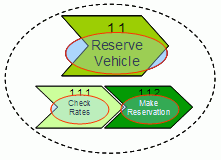
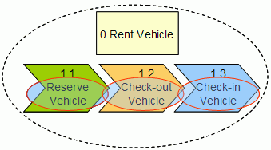

For the Rent-a-car service composition shown in table 1, a higher level composite service is created / composed out of
other services.
The services selected for exposure are circled in red and bold.
-
The dotted circle refers to a composition of everything within that circle.
-
The long-running process of Rent Vehicle (B) includes the composition of the exposed services Reserve Vehicle,
Check-out Vehicle and Check-in Vehicle. However, it is not an exposed service. The short-running process of Reserve
Vehicle (A) is not only a composition or choreography of services but is also an exposed service.
|
A. Short-running, non-interruptible process (micro-flow)
|
B. Long-running , interruptible process
(macro-flow)
|
|

|

|
|
Reserve Vehicle is composed of:
-
Check Rates
-
Make Reservation
|
Rent Vehicle is composed of:
-
Reserve Vehicle
-
Check-out Vehicle
-
Check-in Vehicle
|
Table 1: Rent-a-car service composition
In terms of the SOA layers, Reserve Vehicle would appear in both the choreography layer and the services layer whereas
Rent Vehicle would appear only in the choreography layer.
The left column in table 1 shows a short-running non-interruptible process or micro-flow. In this case, Reserve Vehicle
depends on Check Rates and Make Reservation to complete a transaction of reserving a vehicle. The Reserve Vehicle
process cannot be interrupted and must complete entirely for success of the larger service.
The right column in the table shows a long-running process of Rent Vehicle. After a vehicle has been reserved, the
client checks-out the vehicle from the rental lot at a later time, uses the vehicle over several days or weeks, and
then returns it to the rental lot. At that time, the vehicle is checked in. Since the duration between services
comprising this larger service of Rent Vehicle may be days or weeks, it is specified as a long-running transaction or
interruptible process.
The decision on transaction management versus manual compensation is a key architectural decision that will be made in
service specification during the state management decisions.
|